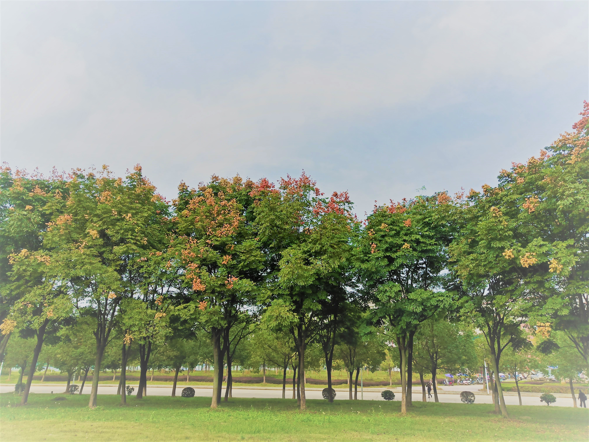
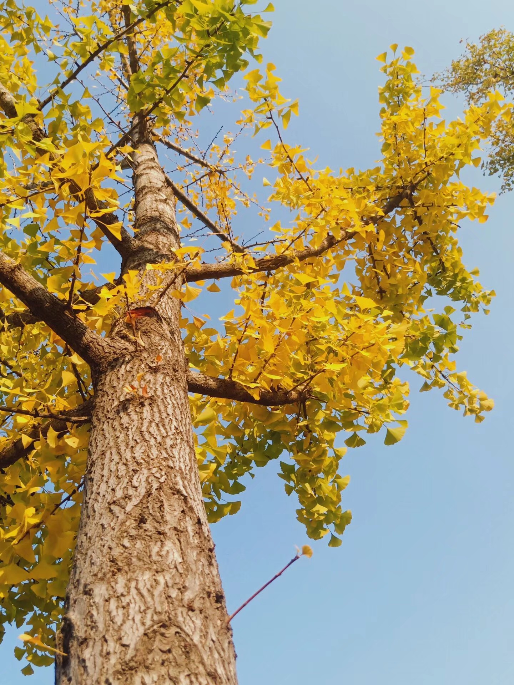
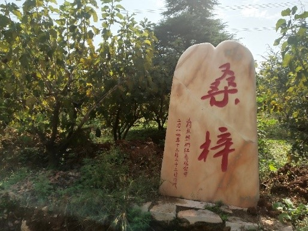

 |
栾树（Koelreuteria paniculata），别名：木栾、栾华等，是无患子科、栾树属植物。为落叶乔木或灌木；花期6-8月，果期9-10月。 观赏价值：栾树春季嫩叶多为红叶，夏季黄花满树，入秋叶色变黄，果实紫红，形似灯笼，十分美丽；栾树适应性强、季相明显，是理想的绿化，观叶树种。宜做庭荫树，行道树及园景树，栾树也是工业污染区配植的好树种。观赏特性栾树春季观叶、夏季观花，秋冬观果，已大量将它作为庭荫树、行道树及园景树，同时也作为居民区、工厂区及村旁绿化树种。 |
银杏（学名：Ginkgo biloba L.）是银杏科、银杏属植物。别名白果、公孙树、鸭脚子、鸭掌树。 观赏价值：银杏树形优美，春夏季叶色嫩绿，秋季变成黄色，颇为美观，可作庭园树及行道树。 |
 |
|
樱花树(拉丁学名 Cerasus yedoensis),属于落叶小乔木，国内普遍有早樱、晚樱，垂枝樱，云南樱等品种，晚樱在国内种植及园林绿化中运用比较广泛。樱花树树皮呈紫褐色，平滑有光泽，有横纹，株高4~8m。叶互生，叶片呈椭网形或倒卵状椭网形，边缘有芒齿， 先端尖而有腺体，表面深绿色，有光泽，背面稍淡。开花时间大致在3月左右。我国产地有浙江、安徽、江苏、四川、山东、河南等，樱花是早春重要的观花树种，被广泛用于园林观赏。樱花可以群植成林，也可植于山坡、庭院、路边、建筑物前。 |
桑（拉丁名：Morus alba L.）别称：桑树，是桑科，桑属 落叶乔木或灌木5月开花，葇荑花序。果熟期6-7月， 观赏价值：桑树树冠宽阔，树叶茂密，秋季叶色变黄，颇为美观，且能抗烟尘及有毒气体，适于城市、工矿区及农村四旁绿化。适应性强，为良好的绿化及经济树种。 |
 |
|
悬铃木拉丁学名Platanus acerifolia 形态特征：落叶大乔木，高可达35米。枝条开展，树冠广阔，呈长椭圆形。9～10月果熟，坚果基部有长毛。 观赏价值：是世界著名的优良庭荫树和行道树。适应性强，又耐修剪整形，是优良的行道树种，广泛应用于城市绿化，在园林中孤植于草坪或旷地，列植于甬道两旁， 尤为雄伟壮观，又因其对多种有毒气体抗性较强，并能吸收有害气体，作为街坊、厂矿绿化颇为合适。 |


计算机11803 1804240605 何姗姗